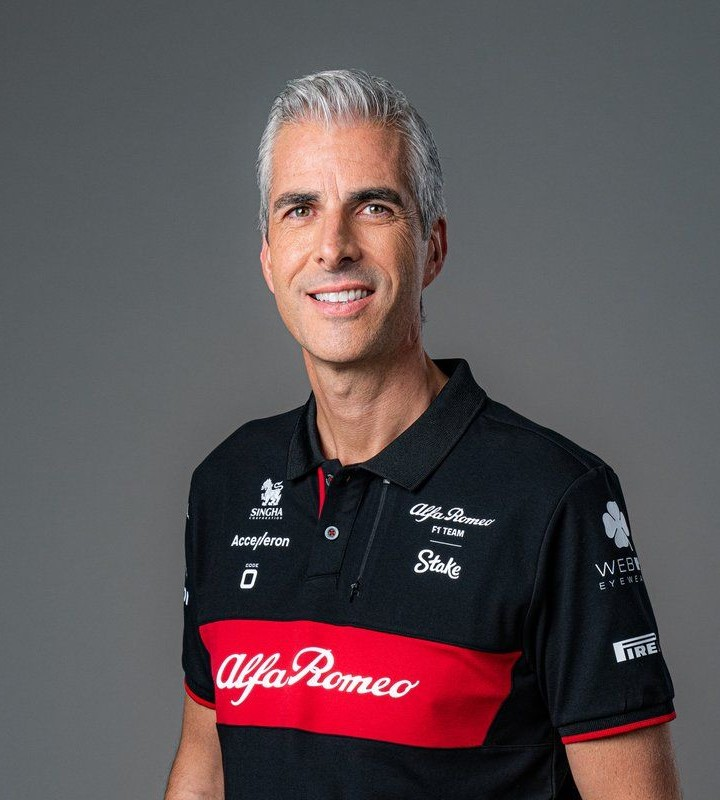
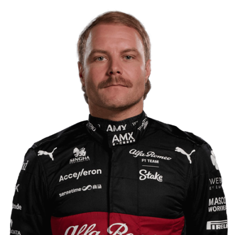
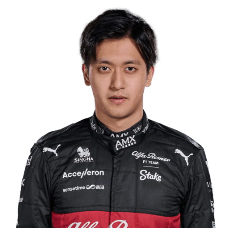

Team
Meet the team.
Team Principal

Alessandro Alunni Bravi
Drivers

Valteri Bottas

Zhou Guanyu

Meet the team.
Alessandro Alunni Bravi
Valteri Bottas
Zhou Guanyu
In 1950, Giuseppe Farina won the first World Championship of Drivers in the 158 with a supercharger, winning three of the seven races. Teammate Juan Manuel Fangio, who finished second, took the title the following year.
However, Alfa Romeo withdrew from the series in 1952 after facing increased pressure from former employee Ferrari. Alfa was a state-owned company, but decided to withdraw after the Italian government refused to fund the expensive design for their new car.
During the 1960s, teams such as LDS, Cooper and De Tomaso all used Alfa Romeo straight-4 engines.
Alfa made a brief return in 1970 and 1971 with a V8 engine that appeared in a third works McLaren, though the entry of rent failed to qualify. A similar arrangement was made in a March car in 1971 to similar results.
Alfa Romeo wouldn't return to the F1 grid until the 2019 season, when Sauber announced that they would become Alfa Romeo Racing. Unlike Sauber's deal with BMW, the ownership, racing licence and management structure remained unchanged.
Kimi Raikkonen and Antonio Giovinazzi were named the team's driving line-up. Giovinazzi managed to lead the Singapore Grand Prix for four laps, the first time that an Alfa Romeo had led an F1 race since De Cesaris back at the 1983 Belgian Grand Prix.
The team's best results came at the Brazilian Grand Prix, when Raikkonen and Giovinazzi finished fourth and fifth respectively, helping Alfa Romeo to end the year in eighth place with 57 points.Both drivers returned for the 2020 F1 season but the team took a significant step back, finishing eight in the standings once again, but this time with just eight points. Despite the lack of success, both Raikkonen and Giovinazzi were brought back for the 2021 season.
2022 marked the beginning of a new chapter, both in Formula 1 and at Alfa Romeo. Bottas has signed a multi-year deal with the outfit, bringing him the extra security he craved after previously being handed one-year contracts at Mercedes.
From the 2024 season onwards, Alfa Romeo won't be the sponsor of Sauber anymore. The team will be named 'Stake F1 Team.' The team name might be adjusted a bit in some Grands Prix because of the local gambling rules to which Stake is related. For example, during, among other events, the Dutch Grand Prix, the team name will be 'Kick F1 Team.'
-
Giuseppe Farina X1(1950), Juan Manuel Fangio X1 (1951),